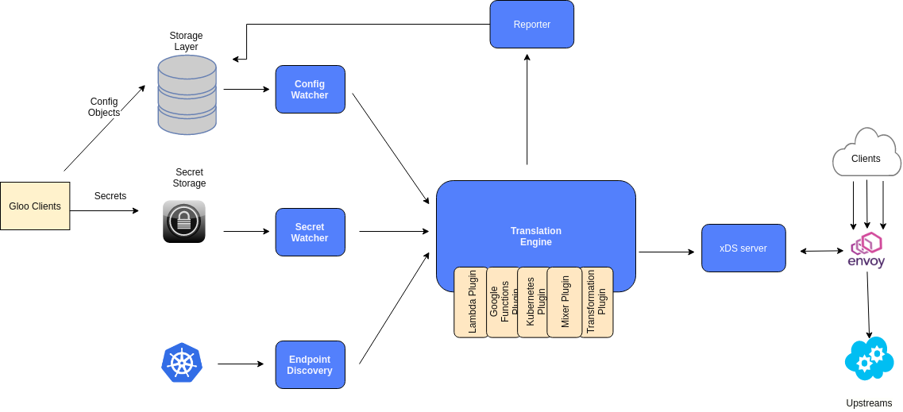
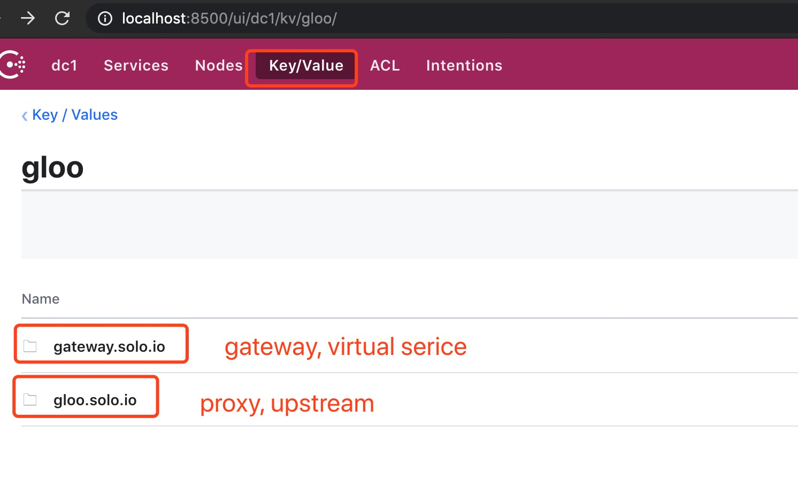
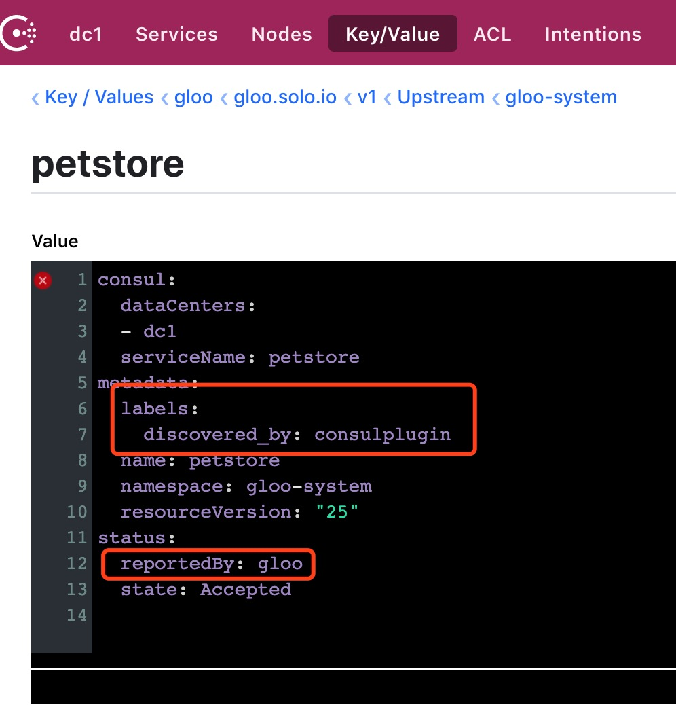
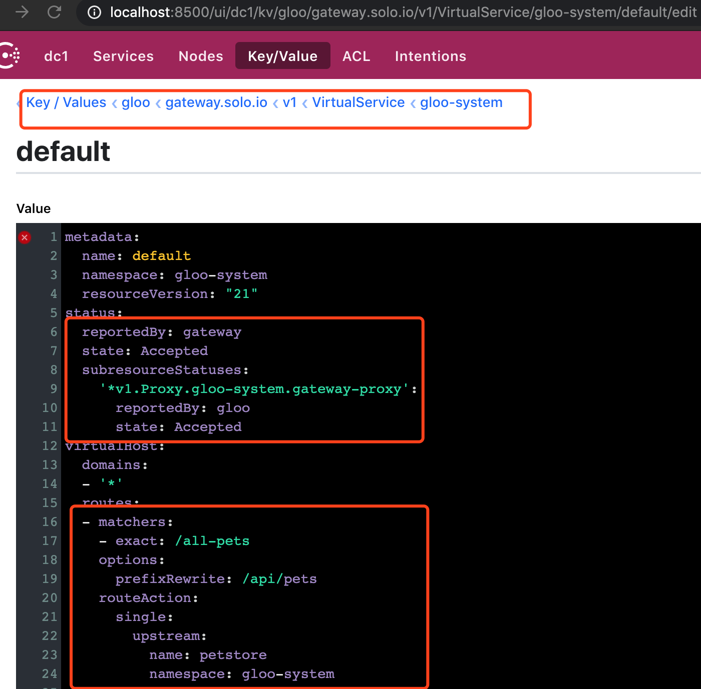

本系列文章主要介绍了在非 kubernetes 环境，使用 gloo 搭建服务网关的过程，以及 gloo 的简单的使用指南。
系列文章目录如下:
- 使用 gloo 在非 kubernetes 环境搭建服务网关指南 - 初识 gloo
- 使用 gloo 在非 kubernetes 环境搭建服务网关指南 - 路由能力: tcp / http
- [使用 gloo 在非 kubernetes 环境搭建服务网关指南 - 路由能力: grpc][3]
- [使用 gloo 在非 kubernetes 环境搭建服务网关指南 - envoy 高可用、错误注入、超时控制、熔断][4]
- [使用 gloo 在非 kubernetes 环境搭建服务网关指南 - 指标监控、报警][5]
- [使用 gloo 在非 kubernetes 环境搭建服务网关指南 - 链路跟踪][6]
- [使用 gloo 在非 kubernetes 环境搭建服务网关指南 - 权限、流控][7]
首先: 使用非 kubernetes 环境意义何在?
调试快速
gloo 文档内的教程内容比较多的偏重在 kubernetes 环境下操作 gloo，而在调试 gloo 功能特性的过程中搭建个人 kubernetes 集群还是有一定成本的。 然而，docker-compose/docker run 的方式很直接也比较快速，而且在实践过程中也发现，基于 gloo 官方文档内的 kubernetes 操作是可以等价迁移过去 docker-compose + consul 的操作的。
技术方案过渡
实际使用场景中并非都能在 k8s 集群上部署服务(虽然使用 k8s 作为容器编排是大势所趋)，docker-compose + consul 提供一种另外的解决方案作为技术方案过渡。
学 envoy
gloo 的强大功能基于 envoy 的能力。在使用 gloo 的过程中验证配置是否正常，很多时候需要去看最后作用于 envoy 的配置是否正常，借此可以熟悉 envoy 的配置。
那么，就来开始系列的第一篇: 初识 gloo :-)。
本系列文章的源码将放在这里
1. gloo 是什么
gloo 是 solo 公司的一个开源产品，它可以看作是 envoy 的一个控制面板。
envoy 是一个功能强大的4层&7层代理，它性能较好、可扩展性强，也比较稳定。由于它基于 http2 协议，所以它在7层上支持 rest、grpc 协议的路由功能。它能够被用作服务的边界网关，而且由于比较稳定，且系统资源占用较少，也被用作微服务里的服务边车（比如在 istio 里），与业务服务一起部署。
envoy 的功能如此强大，以致它的配置也比较复杂。gloo 在 envoy 的上层建立了一个控制面板，将自己抽离的一些业务对象（比如下面会提及的 proxy virtualserivce 等）转换成 envoy 的配置并且加以维护。用户只需操作 gloo 抽离的这些对象即可配置网关，而不需要考虑 envoy 的复杂配置。这样的中间层是有好处的，比如后续想要更换代理实现（比如 nginx，或者 mosn），也可以将 envoy 更换掉，而翻译配置的模块只需改写成从翻译 envoy 的配置为翻译新代理实现即可。
在真实工程环境中，使用 envoy 作为网关或者边车是一个不错的选择。但 envoy 的复杂配置增加了不少使用维护成本，最终你有可能会建立一个类似 gloo 的控制面板，满足工程需求。既然如此何不使用和扩展 gloo 呢？：）
2. gloo 里的概念
xds
为了与 envoy 交互，gloo 里带有了一个 xds 服务。xds 是配置 envoy 的协议，如上文所属，gloo 会将内部业务对象翻译成 envoy 的配置，翻译后的配置就是通过 xds 协议与 envoy 交互的。
gateway
gateway 是服务的入口，可以看做代理服务里的 listener，具体表现为监听某个端口作为流量的入口，进行4、7层的路由分发。
gateway 对象是用户可以配置的。
virtual service
virtual service 可以理解成代理提供的虚拟服务，它是一个7层概念。virtual service 对象可以配置 “host” 字段的流量分发，当流量从 gateway 监听的端口进来，带不同的 “host” 字段的流量能被路由到不同的后端服务中，对外看起来就像不同域名提供了不同的服务。 在 gloo 中，virtual service 对象也可以配置不同功能的路由，比如根据 path 路由、根据 header 路由，也可以配置错误注入、熔断等功能，可以说7层功能的配置基本上都在 virtual service 对象上完成。
virtual service 对象也是用户可以配置的。
proxy
proxy 对象是 gloo 翻译组件根据 gateway 和 virtual service 对象翻译出来的。被用作 xds 服务读取并翻译成 envoy 配置。
对于 proxy 对象，用户是不需要也不应该配置的。 它的内容实际上等价于 gateway + virtual service 对象的内容。
在架构设计角度上，proxy 对象也可以看作是 gloo 翻译组件和 xds 服务的中间层：翻译组件应该将待翻译的内容（比如 gateway、virtual service等）翻译成 proxy 对象，而 xds 服务以 proxy 对象为标准，翻译 envoy 配置。这意味着，在 gloo 里，gateway、virtual service 这类与用户打交道的配置是可以扩展和替换的，gloo 只要求，扩展替换后与翻译组件合作的结果 = proxy 对象即可。
downstream
downstream 可以理解为请求方。
gloo 里没有 downstream 对象。
upstream
upstream 可以理解为后端真正提供业务逻辑的服务。
upstream 对象也是无需用户配置的，gloo 内置服务发现组件，通过监听服务注册（如 k8s 内的 service、consul 里的 service）来生成 upstream 对象，供 xds 服务读取并生成 envoy 配置。
3. gloo 的架构

（上图来自 gloo 文档）
上述架构图基本上能和第二部分讲到的概念对应上：
- xds server = xds 组件
- translation engine + config watcher = 翻译组件，它监听存储层的配置，翻译成 proxy 对象供 xds 服务使用。用户通过操作存储层（如经过 glooctl 命令行工具，或者直接修改存储层配置）配置 gateway、virtual service 等与用户打交道的配置对象。
- endpoint discovery = 服务发现组件
4. 非 k8s 环境运行 gloo 与在 k8s 环境运行的异同
首先，本系列文章在非 k8s 环境下使用 gloo 主要是基于 gloo 源码下的 install/docker-compose-consul 安装方式来使用，可以看出，是基于 docker-compose + consul 来运行的。 在使用上很多地方其实可以对应到 k8s 环境下的实现。
异同点分下列点讲述：
存储层 & 用户操作
在 k8s 环境里，配置存储主要依赖 k8s 本身的配置存储，即 etcd + k8s crd 概念。而在非 k8s 环境下，consul 就成为了配置中心的位置。
那么在 k8s 环境下通过操作 crd 来修改配置，对应过来就是修改 consul 里的 kv 对象了。
在 consul 作为存储层的实现中，gloo 也为我们规划好了文件目录。

从上图看到，gloo 的配置信息在 consul kv 里用不同的文件目录进行规划，与用户打交道的放在
gateway.solo.io，而 xds 服务用到的放在gloo.solo.io（其实也可以看作是根据监听的组件来安排文件目录，在 docker-compose + consul 实现中，gateway.solo.io目录会被 gateway 组件监听，而 gateway 组件就是上文说的 “翻译组件”，gloo.solo.io目录会被 gloo 组件监听，而 gloo 组件就是上文说的 “xds 服务”）。服务注册 & 服务发现
在 k8s 环境里，服务发现自然是监听 k8s 的 service crd 的变化，而在 consul 实现，利用的是 consul 的服务注册功能。 gloo 的服务发现组件会监听 consul 的服务注册，并生成对应的 upstream 对象。
而对于服务注册，k8s 环境下就是自然的创建 service 对象，在 consul 环境下就是将服务注册到 consul 里。
envoy 高可用
对于 envoy 的高可用，在 k8s 环境下可以利用 k8s 的容器编排，扩容多个 envoy 的 pod，而在非 k8s 环境下就相对麻烦些了。
gloo 启动 envoy 需要配置 gloo xds 服务，而开启多个 envoy 实例则需要在其他机器启动 envoy，并配置同一个 gloo xds 服务作为 xds 协议内容的接收服务，并且还可能需要在上层再搭建一个 LB 作为对外流量的入口或者 DNS 解析的 endpoint，虽然这在 k8s 环境下也是类似的，但是在 非 k8s 环境下需要自己去做。
网络模型
在 k8s 环境下，网络模型作为基础设施被实现了，service 对象在 pod 内可以直接网络互通和域名解析， 而在非 k8s 环境下，网络互通、域名解析等，都要自己实现。
5. 将 gloo 跑起来
gloo 文档里的 petstore 例子是能跑通的，上面附上的项目也是基于这个 petstore demo 改动的。
运行初始化脚本
➜ ~ cd path/to/gloo/source/install/docker-compose-consul ➜ docker-compose-consul git:(master) ✗ cat prepare-directories.sh #!/usr/bin/env bash mkdir -p ./data/artifacts/gloo-system ➜ docker-compose-consul git:(master) ✗ bash prepare-directories.sh这个脚本主要是初始化一个 artifacts 文件夹
docker-compose 启动
可以先看看 docker-compose.yml 里面有什么：
version: '3' services: # consul # note: this consul instance is being run in dev mode # and should not be used in production consul: ... # vault # note: this vault instance is being run in dev mode # and should not be used in production vault: ... # example application, the swagger petstore petstore: ... # Gloo components gloo: ... discovery: ... gateway: ... gateway-proxy: image: ${GLOO_REPO:-quay.io/solo-io}/gloo-envoy-wrapper:${GLOO_VERSION:-1.2.4} entrypoint: ["envoy"] ...其中
petstore是业务容器，consul、vault负责服务注册和密钥管理，gateway-proxy实际上是一个 envoy 容器。其他的
gloo、discovery、gateway都是 gloo 的组件， 其中gloo是 gloo 实现的 xds 服务，gateway是上文说的”翻译组件”，discovery是上文说的”服务发现组件”。运行
docker-compose up &启动：➜ docker-compose-consul git:(master) ✗ docker-compose up & ➜ docker-compose-consul git:(master) ✗ Creating network "docker-compose-consul_default" with the default driver Creating docker-compose-consul_gloo_1 ... done Creating docker-compose-consul_vault_1 ... done Creating docker-compose-consul_gateway-proxy_1 ... done Creating docker-compose-consul_consul_1 ... done Creating docker-compose-consul_gateway_1 ... done Creating docker-compose-consul_petstore_1 ... done Creating docker-compose-consul_discovery_1 ... done Attaching to docker-compose-consul_vault_1, docker-compose-consul_discovery_1, docker-compose-consul_gateway_1, docker-compose-consul_gloo_1, docker-compose-consul_petstore_1, docker-compose-consul_gateway-pro xy_1, docker-compose-consul_consul_1 vault_1 | Couldn't start vault with IPC_LOCK. Disabling IPC_LOCK, please use --privileged or --cap-add IPC_LOCK discovery_1 | {"level":"info","ts":"2020-01-31T07:02:09.470Z","logger":"uds","caller":"setuputils/main_setup.go:108","msg":"using filesystem for settings","version":"1.2.4","directory":"/data/"} discovery_1 | {"level":"info","ts":"2020-01-31T07:02:09.470Z","logger":"fds","caller":"setuputils/main_setup.go:108","msg":"using filesystem for settings","version":"1.2.4","directory":"/data/"} gateway_1 | {"level":"info","ts":"2020-01-31T07:02:10.583Z","logger":"gateway","caller":"setuputils/main_setup.go:108","msg":"using filesystem for settings","version":"1.2.4","directory":"/data/"} gloo_1 | {"level":"warn","ts":"2020-01-31T07:02:10.628Z","caller":"setup/setup.go:22","msg":"Could not create metrics storage loader - will not report usage: %s","error":"invalid configuration: no co nfiguration has been provided","errorCauses":[{"err ...看到上文信息即启动成功。
服务注册到 consul
首先我们要获取 petstore 的内网 ip 地址
➜ gloo git:(master) ✗ PETSTORE_IP=$(docker inspect -f '{{range .NetworkSettings.Networks}}{{.IPAddress}}{{end}}' docker-compose-consul_petstore_1) ➜ gloo git:(master) ✗ echo ${PETSTORE_IP} 172.24.0.5 ➜ gloo git:(master) ✗ cat > petstore-service.json <<EOF { "ID": "petstore1", "Name": "petstore", "Address": "${PETSTORE_IP}", "Port": 8080 } EOF ➜ gloo git:(master) ✗ cat petstore-service.json { "ID": "petstore1", "Name": "petstore", "Address": "172.24.0.5", "Port": 8080 } ➜ gloo git:(master) ✗ ➜ gloo git:(master) ✗ cat petstore-service.json { "ID": "petstore1", "Name": "petstore", "Address": "172.24.0.5", "Port": 8080 } ➜ gloo git:(master) ✗ curl -v \ -XPUT \ --data @petstore-service.json \ "http://127.0.0.1:8500/v1/agent/service/register" * Trying 127.0.0.1... * TCP_NODELAY set * Connected to 127.0.0.1 (127.0.0.1) port 8500 (#0) > PUT /v1/agent/service/register HTTP/1.1 > Host: 127.0.0.1:8500 > User-Agent: curl/7.54.0 > Accept: */* > Content-Length: 83 > Content-Type: application/x-www-form-urlencoded > * upload completely sent off: 83 out of 83 bytes < HTTP/1.1 200 OK < Vary: Accept-Encoding < Date: Fri, 31 Jan 2020 07:35:15 GMT < Content-Length: 0 < * Connection #0 to host 127.0.0.1 left intact ➜ gloo git:(master) ✗看到 consul 返回 200，服务注册成功。
通过
glooctl可以看到 upstream 已被 gateway 捕捉到，consul kv 也看到 upstream 对象已经创建了。➜ gloo git:(master) ✗ glooctl get upstream --use-consul +----------+--------+----------+--------------------+ | UPSTREAM | TYPE | STATUS | DETAILS | +----------+--------+----------+--------------------+ | consul | Consul | Accepted | svc name: consul | | | | | svc tags: [] | | | | | | | petstore | Consul | Accepted | svc name: petstore | | | | | svc tags: [] | | | | | | +----------+--------+----------+--------------------+
从
dicovered_by: consulplugin可以看出，这个 upstream 对象是 discovery 组件创建的， 而status=accepted reportedBy gloo能看出，这个对象创建后 gloo 组件（xds 服务）发现了这个对象的创建，并附加了一个status=accepted的属性。增加路由
使用 glooctl 增加到 petstore 的服务的路由
➜ gloo git:(master) ✗ glooctl add route \ --path-exact /all-pets \ --dest-name petstore \ --prefix-rewrite /api/pets \ --use-consul {"level":"info","ts":"2020-01-31T18:53:56.585+0800","caller":"selectionutils/virtual_service.go:99","msg":"Created new default virtual service","virtualService":"virtual_host:<domains:\"*\" > status:<> metadata:<name:\"default\" namespace:\"gloo-system\" > "} +-----------------+--------------+---------+------+---------+-----------------+--------------------------------+ | VIRTUAL SERVICE | DISPLAY NAME | DOMAINS | SSL | STATUS | LISTENERPLUGINS | ROUTES | +-----------------+--------------+---------+------+---------+-----------------+--------------------------------+ | default | | * | none | Pending | | /all-pets -> | | | | | | | | gloo-system.petstore | | | | | | | | (upstream) | +-----------------+--------------+---------+------+---------+-----------------+--------------------------------+用 curl 验证请求正常
➜ gloo git:(master) ✗ curl localhost:8090/api/pets -v * Trying ::1... * TCP_NODELAY set * Connected to localhost (::1) port 8090 (#0) > GET /api/pets HTTP/1.1 > Host: localhost:8090 > User-Agent: curl/7.54.0 > Accept: */* > < HTTP/1.1 200 OK < Content-Type: application/xml < Date: Fri, 31 Jan 2020 10:55:47 GMT < Content-Length: 86 < [{"id":1,"name":"Dog","status":"available"},{"id":2,"name":"Cat","status":"pending"}] * Connection #0 to host localhost left intact ➜ gloo git:(master) ✗ curl localhost:8080/all-pets -v * Trying ::1... * TCP_NODELAY set * Connected to localhost (::1) port 8080 (#0) > GET /all-pets HTTP/1.1 > Host: localhost:8080 > User-Agent: curl/7.54.0 > Accept: */* > < HTTP/1.1 200 OK < content-type: application/xml < date: Fri, 31 Jan 2020 10:55:53 GMT < content-length: 86 < x-envoy-upstream-service-time: 3 < server: envoy < [{"id":1,"name":"Dog","status":"available"},{"id":2,"name":"Cat","status":"pending"}] * Connection #0 to host localhost left intactlocalhost:8090 提供是 petstore 服务提供的，8080 是经过 gloo 路由的请求，可以看到 http 返回头里有
server: envoy的信息。
这时候查看 consul kv 查看 virtual service 有一个对应的对象被创建了，其中
matchers属性里和我们填写的路由信息很相似，而 gloo 组件也对此附加了 accepted status。我们还能查看到 proxy 对象的内容和通过 envoy 的 debug 端口查看到翻译过来的配置。
➜ gloo git:(master) ✗ curl localhost:19000/config_dump { "configs": [ { "@type": "type.googleapis.com/envoy.admin.v2alpha.BootstrapConfigDump", "bootstrap": { "node": { "id": "docker-compose-node", "cluster": "gateway", "metadata": { "role": "gloo-system~gateway-proxy" }, "build_version": "3bf7d19b3405ebf85dbc6aac3fc15214a190b970/1.12.0-dev/Distribution/RELEASE/BoringSSL" }, ....
6. 总结
本篇是系列文章的第一篇，主要介绍了 gloo 的基本情况和简单跑起了非 k8s 环境下的 gloo，为后续的其他功能介绍做个铺垫。 后续文章就可以更多涉及网关能力的介绍。